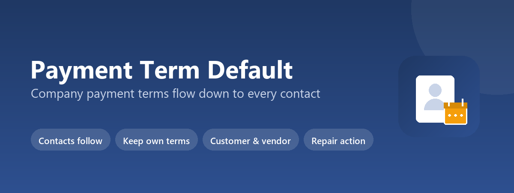

A company's customer and vendor payment terms apply to all its contacts, except the contacts you decide should keep their own.
Set the payment terms on the company and every contact under it follows, including contacts created later. Give one contact different terms and it keeps them, because Keep Own Payment Terms is ticked for you. Untick the box and the contact goes straight back to the terms of its company.
👥 New contacts followA new contact of a company gets the company's customer and vendor payment terms, however it is created. |
🔄 Changes flow downChanging the terms of the company updates all its contacts, including contacts of contacts and archived ones. |
📌 Keep own termsGive a contact different terms and the Keep Own Payment Terms box is ticked for you, so later changes on the company leave it alone. |
↩ Back in one clickUntick the box and the contact returns to the payment terms of its company. |
🏢 Moves with the contactA contact moved to another company takes the payment terms of the new company. |
🛠 Repair existing dataThe Apply Company Payment Terms action realigns the selected contacts and tells you how many were updated or left alone. |
Odoo 18.0 • Community & Enterprise • depends on Invoicing • Licence LGPL-3
Odoo implementation and development. thecodelegion.com